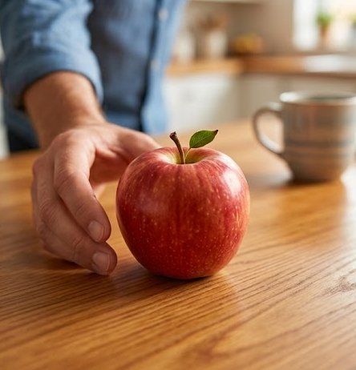
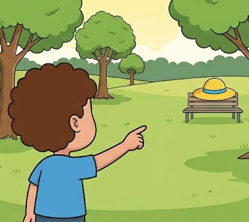
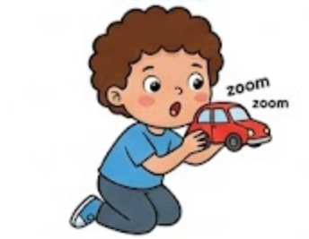
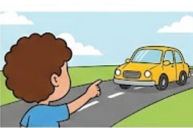

This and That
🔵 We use “this” for one thing that is close to us.
🟣 We use “that” for one thing that is far from us.
Look at the pictures. Can you tell which is this and which is that?

This is an apple.

That is a hat.

This is a car.

That is a car.
Easy Rule!
🔵 This: Use for one thing that is near you.
🟣 That: Use for one thing that is far from you.